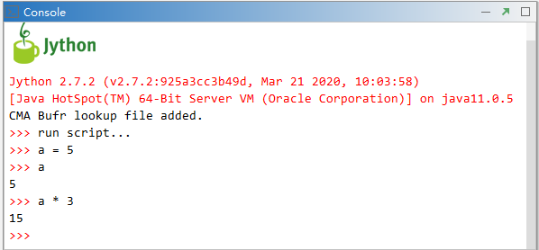
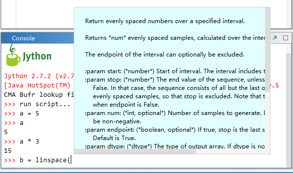
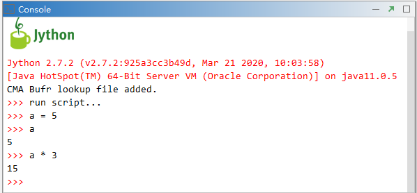
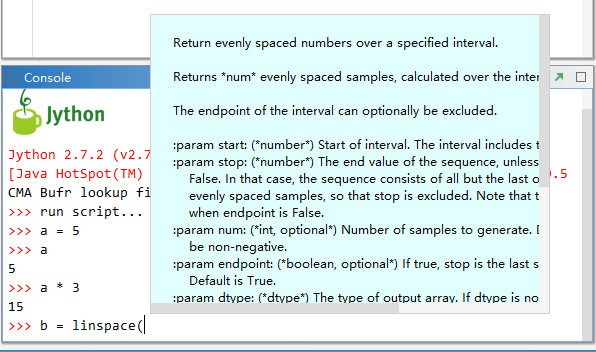

命令行¶
MeteoInfoLab启动后在Console中会出现Jython的图标以及Jython和Java的版本信息，以及Jython命令行输入的提示符：>>>。 可以在Console中输入Jython命令行代码，点击回车会解释运行，输入已经定义的变量可以将变量的内容在Console中输出。
Console中有代码提示功能，在包、模块或者变量后面输入小数点或者函数输入左括号时会出现相应的代码提示框来帮助完成代码的编写。
MeteoInfoLab启动后在Console中会出现Jython的图标以及Jython和Java的版本信息，以及Jython命令行输入的提示符：>>>。 可以在Console中输入Jython命令行代码，点击回车会解释运行，输入已经定义的变量可以将变量的内容在Console中输出。
Console中有代码提示功能，在包、模块或者变量后面输入小数点或者函数输入左括号时会出现相应的代码提示框来帮助完成代码的编写。
